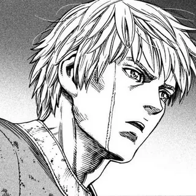

Задание 1



Задание 3
Задание 4
Задание 6
Задание 7
"Ван Пис" — это одно из самых популярных и долгоживущих аниме и манга-сериалов в мире, созданное Эйитиро Одой. История началась в 1997 году, когда манга впервые была опубликована, и с тех пор она стала настоящим культурным феноменом. Основной сюжет вращается вокруг Луффи, мальчика с резиновыми способностями, который мечтает стать королём пиратов и найти легендарное сокровище — Ван Пис. Путешествие Луффи и его команды — это не просто приключения, но и история о дружбе, свободе и борьбе за свои мечты.
В поисках Ван Писа Луффи собирает разнообразную команду.